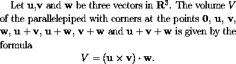
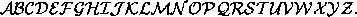

(The following applies to LaTeX2e, a
recent version of LaTeX. It does not apply to older
versions of LaTeX.)
The `math italic' font is automatically
used in mathematics mode unless you explicitly change the font.
The rules for changing the font in mathematics mode are rather different
to those applying when typesetting ordinary text.
In mathematics mode any change only applies to the single character
or symbol that follows (or to any text enclosed within braces
immediately following the control sequence). Also, to change
a character to the roman or boldface font, the control sequences
\mathrm and \mathbf must be used
(rather than \textrm and \textbf).
The following example illustrates the use of boldface in mathematical formulae. To obtain
one could type
Let $\mathbf{u}$,$\mathbf{v}$ and $\mathbf{w}$ be three
vectors in ${\mathbf R}^3$. The volume~$V$ of the
parallelepiped with corners at the points
$\mathbf{0}$, $\mathbf{u}$, $\mathbf{v}$,
$\mathbf{w}$, $\mathbf{u}+\mathbf{v}$,
$\mathbf{u}+\mathbf{w}$, $\mathbf{v}+\mathbf{w}$
and $\mathbf{u}+\mathbf{v}+\mathbf{w}$
is given by the formula
\[ V = (\mathbf{u} \times \mathbf{v}) \cdot \mathbf{w}.\]
There is also a `calligraphic' font available in mathematics mode.
This is obtained using the control sequence \mathcal.
This font can only be used for uppercase letters.
These calligraphic letters have the form
